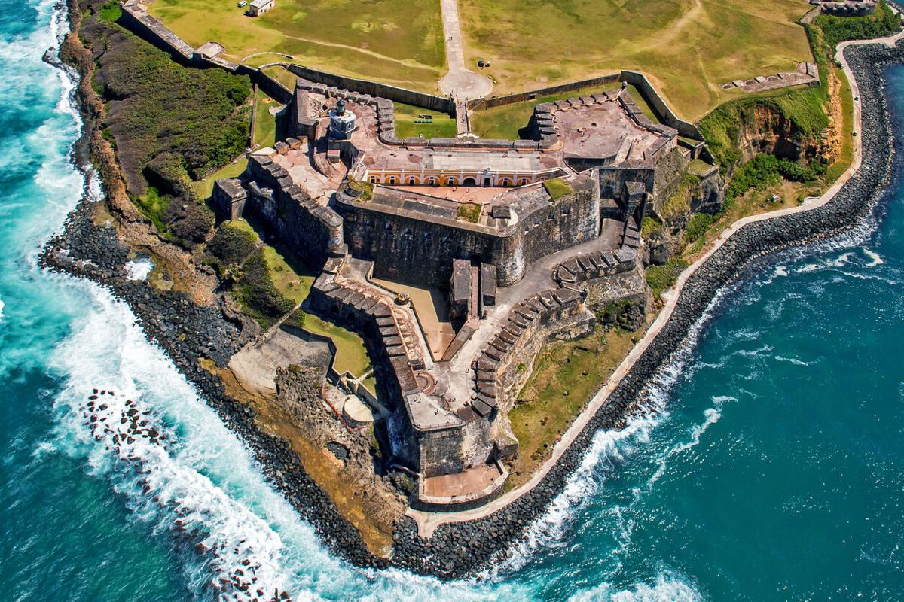
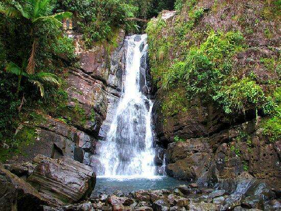

 

Este video, nos muestra distintos lugares turisticos para visitar mientras estás en Puerto Rico. Los más famosos son: El Yunque, un bosque que tiene diferentes ríos. El castillo San Cristobal, ubicado en el Viejo San Juan. Y por último, una de las playas más visitadas llamada Survival Beach ubicada al oeste de la isla en Aguadilla. Estos son algunos de los muchos lugares que menciona el video y que se pueden adventurar en Puerto Rico. Si no vas a alguno de estos lugares mientras estás en tu estadía, no estás conociendo al verdadero Puerto Rico y sus monumentos históricos más importantes.